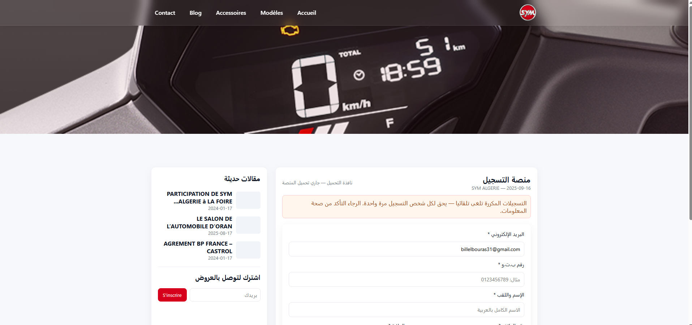
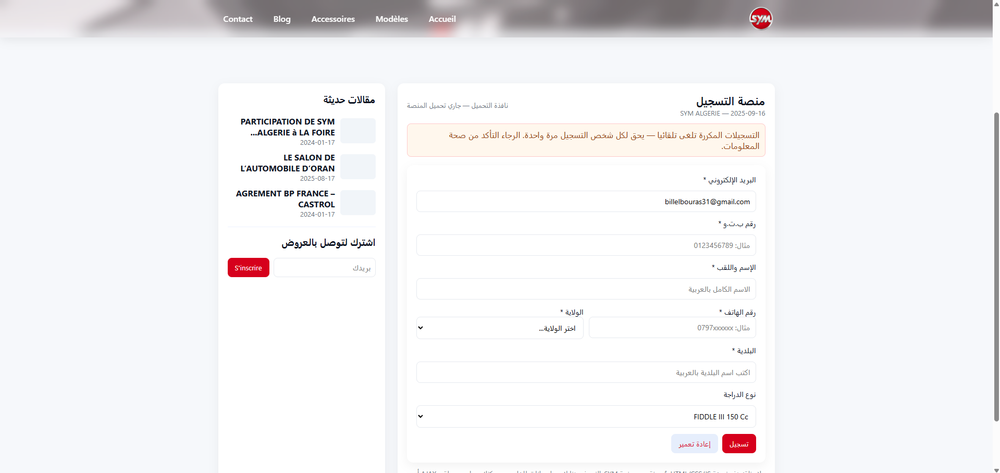

Project: SYM Algeria Registration Portal Redesign
This project focuses on the complete redesign and reprogramming of the SYM Algeria Registration Portal. The goal was to transform the old interface into a modern, user-friendly, and highly functional system that simplifies the registration process for users and enhances overall efficiency.
The portal was developed with a clean and intuitive user interface, ensuring smooth navigation, responsive design, and improved accessibility across all devices. The redesign aimed to deliver a practical and streamlined experience for both users and administrators.
Key improvements of the project include:
- Redesigned UI/UX for better usability and accessibility
- Optimized registration workflow for faster processing
- Mobile-first responsive design
- Enhanced system performance and reliability
- Modern, clean, and professional interface